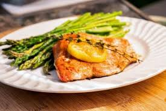

Populyar Reseptlər
Ən sevilən və yüksək reytinqli yeməklərimizdən bəzilərini araşdırın.
Spagetti Boloqnez
Zəngin, yavaş bişirilmiş ət sousu ilə klassik İtalyan makaron yeməyi.
Reseptə Baxın

Ədviyyatlı Balıq Takosu
Təzə, şirəli və hazırlanması asan, bir az kəskin balıq takoları.
Reseptə Baxın
Qabarıq Qaragilə Pankeykləri
Bu yüngül və yumşaq pankeyklərlə gününüzə düzgün başlayın.
Reseptə Baxın